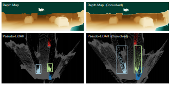
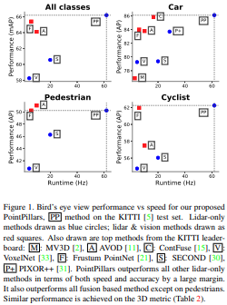
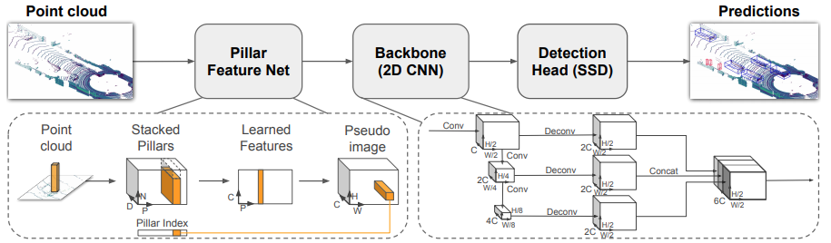
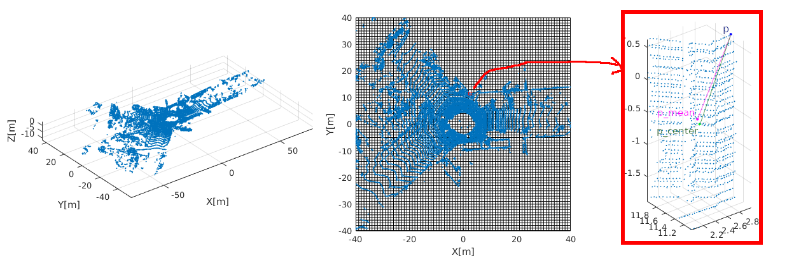
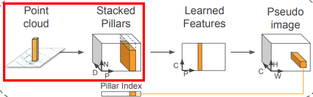
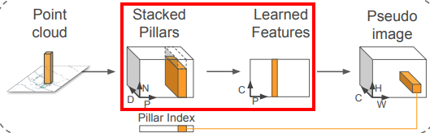
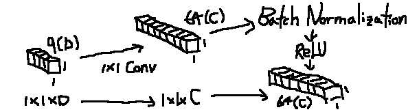
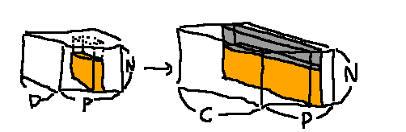
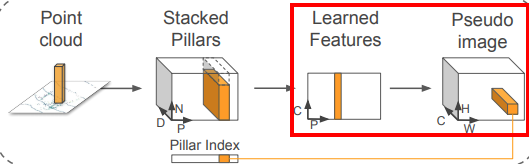
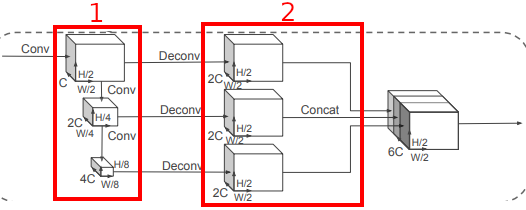

[2019 CVPR] PointPillars
2019 CVPR Paper on Lidar Object Detection
Researchers at nuTonomy (spinned off from MIT). First Author: Alex H. Lang
Abstract
최근에 두가지 encoder가 사용됨
- fixed encoders : 빠르지만 정확도가 낮음
- learned from data encoders : 정확하지만 느림
- 이 연구에선 vertical columns (pillars)로 정리된 point cloud의 representation을 learning하는 encoder를 제시.
- Encoded features가 2D convolutional detection architecture에 적용 가능
- 또한 Lean downstream network을 제시
- 실험 검증을 통해 정확도 및 속도가 훨씬 빠름을 보임
Introduction
기존 방법은 bottom-up pipeline으로 background subtraction을 시작으로 saptiotemporal clustering 및 classification을 통해 진행됨.
Deep learing 기법이 적용되는 lidar와 image의 가장 큰 차이점
- Point cloud는 sparse, Image는 dense
- Point cloud는 3D, Image는 2D
초기 연구는 3D convolution이나 point cloud를 image plane에 projection함으로서 진행됨
최근 연구는 point cloud를 bird’s eye view (BEV)로 보는 경향이 있음:
- BEV는 object scale을 보존함
- BEV에서의 convolution은 local range information을 보존함
- Image view에서의 convolution은 depth를 blurring하는 효과를 줄 수 있음

하지만, BEV는 굉장히 sparse할 수 있어 CNN이 impractical 하고 inefficient할 수 있음.
이런 문제를 해결하는 주된 방법으로는 ground plane에 대해 일정한 grid를 생성해 그 voxel 안의 hand-crafted feature encoding하는 방법이 있음. 하지만 이는 generalize하기 어려움.
VoxelNet은 이런 문제를 해결하는 end-to-end 기법들의 초기 연구들임.
- Space를 voxel로 나눔
- 각 voxel에 PointNet을 적용
- 3D CNN을 통해 수직축을 통합
- 2D CNN을 통해 detection architecture가 적용됨
VoxelNet의 성능은 좋으나 3D CNN으로 시간이 좀 걸림 (4.4Hz)
최근 SECOND가 VoxelNet의 inference 시간을 줄였으나 아직 3D CNN은 bottleneck이다.
이 연구에선 오직 2D CNN을 이용하는 end-to-end 3D objection detection 기법을 소개한다.
PointPillars는 pillar들의 feature를 learning하는 novel encoder를 사용하여 3D bounding box를 검출한다.
- Fixed encoder보다 feature learning을 함으로서 point cloud에 대한 모든 정보를 아우를 수 있다.
- Voxel대신 pillar를 사용함으로서 vertical direction으로의 binning이 필요없다 (parameter-free)
- 2D convolution을 사용함으로서 빠름
- 다양한 조건과 radar point cloud에서조차 Hand-tuning이 필요 없음
Kitti benchmark에서도 좋은 성능을 보임

Related work
Object detection using CNN
R-CNN을 시작으로 영상에선 CNN이 짱이라는 것이 확립됨.
이후 region proposal network 한 후 classification으로 이어지는 two stage 기법들이 사용됨.
이런 two-stage 기법은 SSD와 같은 single stage architecture보다 좋은 성능을 보였음
하지만 최근 focal loss function를 사용한 single stage 기법이 정확도와 속도면에서 two-stage 기법을 앞선다고 함 (잘 설명된 post 기본적으로 scene에서 object보다 background가 더 많이 자리를 차지하기에, 이와 관련된 weight를 따로 부여하는 방식)
여기서의 network는 single stage로 구성됨
Object detecion in lidar point clouds
Point cloud 가 3차원이니 3D CNN을 사용하는 것이 직관적으로 봤을 떄 자연스러움. 하지만 느림 (0.5초)
최근 기법들은 ground plane으로 또는 image plane으로 projection 시키는 방법을 통해 runtime을 줄임.
가장 최근 많이 사용되는 방법은 고정된 길이와 hand-crafted feature를 가진 vertical column으로 encoding하여 pseudo-image를 형성하여 standard image detection architecture를 적용함.
MV3D와 AVOD는 two-stage 기법을 적용하며, PIXOR와 Complex YOLO는 single stage pipeline을 사용함.
PointNet및 PointNet++에선 learning from unordered set을 위한 구조를 제시하였으며, VoxelNet은 PointNet을 lidar point cloud에 적용한 첫번째 사례이다.
VoxelNet은 voxel들에 PointNet이 적용되고, 후에 3D CNN을 적용하고 2D CNN을 Backbone으로 한 후 detection head로 넘어가는 구조로 이루어져있다. 이는 end-to-end learning이 가능하나, 다른 3D CNN과 같이 오래걸린다(4.4Hz).
Frustum PointNet은 다른 fusion based method보다 좋은 성능을 보이나 multi-stage design은 end-to-end learning에 적합하지 않다.
SECOND은 VoxelNet을 향상시켜 (Sparcity를 이용함) 더 좋은 성능과 계산속도를 나타내나 여전히 3D CNN을 사용해 느리다.
Contribution
- Point cloud encoder를 적용해 3D object detection을 위한 end-to-end learning 구조를 제시함
- Pillar들이 dense 2D CNN에 어떻게 적용되는지 보여주며, 62Hz의 inference 속도를 보암
- KITTI dataset에 대한 검증을 하였으며 car, pedestrian, cyclist에 대해 BEV 및 3D benchmark에서 SOTA를 이룸 (지금은 100위 밖)
- 좋은 성능을 보이는 이유에 대해 연구를 진행함
PointPillars Network

네트워크는 3가지로 구성됨
- Pillar Feature Network
- Point cloud to pseudo image
- 2D CNN Backbone (2 sub-networks)
- top-down network로 spatial resolution 증가에 따른 feature 검출
- Upsampling & concatenation of 1
- Detection Head (SSD)
- SSD를 통한 Object detection
Pointcloud to Pseudo-Image
이부분은 사실 논문을 3~4번 읽어도 잘 이해를 못했는데, 이 글의 코드를 보면서 이해가 한번에 되었다.

그림을 열심히 그렸으나 역시 더럽게 못그린다. 여튼,
- Point cloud를 x-y plane에서 일정한 grid로 binning을 한다. 각 bin(voxel)은 pillar가 된다. (첫번째->두번째)
- 논문에서는 set of pillars \(\mathcal{P}\) with \(\lvert \mathcal{P} \rvert = B\)라는데 놀랍게도 \(B\)에 대한 언급은 이 이후에도 전혀 없다.
- 각 pillar안에 속해있는 point들의 mean값과 pillar의 중심값을 찾는다. (두번째->세번째)
- 각 pillar안에 속해있는 point마다 9차원 값을 넣는다 -> \([x, y, z, r, x_c, y_c, z_c, x_p, y_p]\)
여기서 \([x, y, z]\)는 point의 원래 좌표이며 \(r\)은 reflectivity이며 intensity값으로 넣기도 한다. (두개가 다른건가? 갑지기 나오니 헷갈리네). \([x_c, y_c, z_c]\)는 \(p - p_{mean}\)이고, \([x_p, y_p]\)는 \(p-p_{center}\)의 \(x, y\) 좌표값이다.
자 이제 PointPillar stacking을 해야되는데, 이 부분이 조금 헷갈려서 헤맸었다. 결론적으로 말하면 Pillar를 쌓는 순서는 전혀 상관 없다.

- 여기서 \(D\)는 dimension으로 위와 같이 \(D=9\)가 된다. \(([x, y, z, r, x_c, y_c, z_c, x_p, y_p])\)
- \(P\)는 maximum number of non-empty pillars per sample(point cloud)로 약 12000개 정도로 잡는다.
- \(N\)은 maximum number of points per pillar로 약 100개 정도로 잡는다.
일단 \(D\times P\times N\) 크기의 tensor를 만든 다음 pillar들을 순서에 상관 없이 넣는 형식이다. 순서가 상관 없는게, pillar의 feature를 뽑은 후(이 과정은 단순히 pillar의 feature를 뽑는데 있어 GPU 연산을 쉽게 하기 위해 만들어진 구조라 추측된다. 처음에는 “Pillar간 convolution하는거 아니야? 그럼 위치도 상관있을텐데?” 생각했는데 아니었다.) 어차피 다시 voxel coordinate로 다시 이동되기 때문이다.
만약 pointcloud 내 non-empty pillar의 갯수가 \(P\)보다 크면 pillar를 random하게 선택하며 pillar 내 point 갯수도 \(N\)에 대해 마찬가지로 한다. 정 반대로 만약 pillar갯수나 point 갯수가 이보다 작다면 zero padding하는 형식이다. (뭔가 seq2seq가 겹쳐보인다)
자 그럼 어떻게 쌓느냐, 좌표와 상관 없이 선택된 pillar에 대해 위의 그림에서 \(P\)축에 놓고, 그 \(P\)값에 마찬가지로 \(N\)축에 pillar 내의 point vector(9개 값을 가진)를 쌓아올린다. (여기서 point를 쌓는 것도 순서와 상관이 없는데, 나중에 feature를 뽑고 max값을 통해 invariance of order를 만족시킨다.) 다만 코드상 구현을 보면 stacked pillar를 다시 pseudo image로 변환할 때 바로 coordinate를 찾을 수 있도록 unordered_map 상에 x, y index 값을 저장하여 hash형태로 나타낸다.


그 다음 각 point feature마다 \(1\times 1\) Convolution을 수행하여 \(1\times 1\times D\) input layer를 \(1 \times 1\times C\) 로 늘린다. (찾아보니 이는 사실상 fully connected와 같은 모양이다. 계산을 빠르게 하기 위해 CNN으로 하는건가?) PointNet이랑 비슷하게 이 \(1 \times 1\) convolution은 모든 point에 동일한 커널로 진행하는 듯 하다. (하 ubuntu gimp로 그림 그릴라니까 빡세다. Powerpoint가 그립구나)
이후 batch normalization과 ReLU를 통해 activation하여 \(1\times 1\times C\)짜리 layer 결과가 나온다.

그럼 결과적으로 \((D\times P \times N)\) layer는 \({C \times P \times N}\)짜리 layer로 바뀐다. 참고로 point 수 또는 pillar 수가 부족한 경우 (위 그림의 회색 부분)은 input layer나 output(convolution 해봤자 0이니까) layer나 전부 0이다.
이후 point별로 (그림에서의 N축) 각 feature element끼리의 max operator를 진행하여 결과적으로 \(C\times P\)의 layer가 나오게 된다.

이후 위에 서술하듯 각 pillar별로 크기 \(C\)의 vector를 hashing으로 미리 저장해둔 pillar의 voxel coordinate로 이동시켜줌으로서 channel \(C\)의 pseudo image를 생성한다. 이로써 각 pillar안의 3D points에 대한 feature들을 (웬지 max operator로 많은 feature가 사라질 것 같지만..) 하나의 pillar feature로 함으로써 2D convolution operation이 가능하게 된다.
Backbone

VoxelNet과 비슷한 backbone을 가진다 한다. 위의 그림의 1과 2의 sub-network로 구성되는데,
- Top-down network : Produce features at increasingly small spatial resolution (resolution이 증가하면 .. 음 그림과 매칭이 안되는거 같은디)
- Perform upsampling & concatenation of the top-down features.
Network-1은 연속된 \(\text{Block}(S, L, F)\)로 이루어졌느데, pseudo image의 크기에 따라 정해지는 stride \(S\)로 적용된다. 각 block은 output channel이 \(F\)인 \(L\)개의 \(3\times 3\) 2D convolution layer가 있으며 각각 batch normalization과 ReLU가 뒤따른다.
첫번째 convolution은 \(\frac{S}{S_{in}}\)의 stride를 가지는데, 이는 stride \(S_{in}\)을 가진 input blob을 입력한 후 block operation이 stride \(S\)를 가질 수 있기 위해 행해진다. (뭔뜻인겨?)
이후의 convolution의 block operation은 1의 stride를 가진다.
Network-2: top-down block에서(Network-1) 나온 모든 feature들은 upsampling과 concatenation을 통해 합쳐진다.
- Feature들은 pseudo image 크기를 고려한 초기 stride \(S_{in}\)에서 마지막 stride \(S_{out}\)로 final feature \(F\)를 가진 transposed 2D convolution을 통해 upsampled된다. \(\text{Up}(S_{in}, S_{out}, F)\)
여기서 transposed 2D convolution과 deconvolution은 완전 다른 것이다!(비슷하면서도 아니다! 참고)
이후 batch normalization 및 ReLU를 적용한다. 다른 stride에 대한 feature들을 concatination함으로서 최종 feature가 생성된다.
Detection Head
SSD의 설정을 차용하여 3D object detection을 수행한다. 만약 segmentation을 하고 싶다면 detection head만 변경하면 된다고 한다. SSD와 비슷하게 priorbox를 ground truth와 2D iou를 통해 비교한다. Bounding box의 height와 elevation은 사용되지 않는다. (추가적인 작업이 필요하다! ex: ground estimation)
일단 여기까지가 대부분의 내용인데, 이후 내용들도 참고하기 좋은 내용들이다. 일단 시간이 없으니 magic word로 여기까지 TBW!